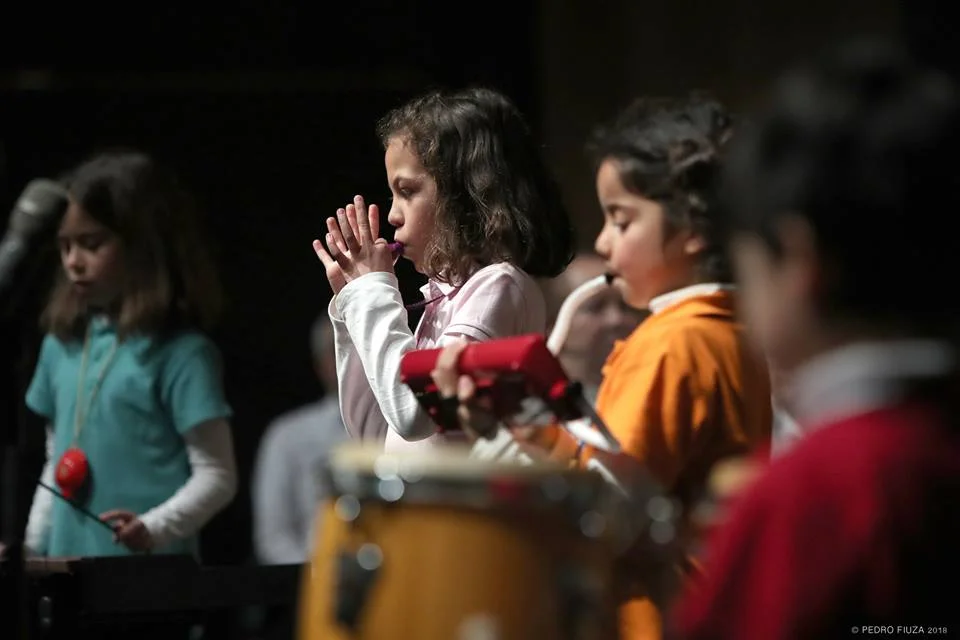

Descoberta
Aprender música através do jogo, do corpo, da voz e da curiosidade.

Coro infantil · Cascais
A primeira aventura coral: voz, respiração, movimento e ocarina.
Porquê este nome?
Pueri remete para as crianças: VoxPueri é, literal e simbolicamente, o lugar onde começa a voz. A raiz desta história vem de longe — em 1996 nasceu o primeiro Coro Infantil da VoxLaci, para crianças dos 7 aos 11 anos; em 2002, depois de um Simpósio Mundial de Música Coral em Minneapolis, surgiu o Coro dos Pequenininhos, para os mais novos, dos 3 aos 7. É dessa dupla raiz que nasce o VoxPueri de hoje. Aqui, cantar é descoberta: a criança aprende a escutar, respirar, mover-se, experimentar sons e perceber que a sua pequena voz pode transformar-se quando encontra outras vozes. O canto cruza-se com movimento, ritmo, expressão e instrumentos como a ocarina. Mais importante do que formar pequenos cantores é despertar curiosidade, confiança e prazer pela música — a primeira porta de entrada num mundo que pode acompanhar uma criança toda a vida.
4–9/10 anos
A VoxPueri é o coro infantil da comunidade VoxLaci, para crianças dos 4 aos 10 anos, com ensaios à segunda-feira (17h–17h50) no Seminário Torre d'Águilha, em São Domingos de Rana, Cascais.
VoxPueri oferece às crianças uma primeira experiência musical em grupo. O canto, o movimento e os instrumentos simples ajudam a desenvolver ouvido, coordenação, linguagem, autonomia e confiança. Como em toda a VoxLaci, ser amador tem aqui o sentido mais antigo da palavra: aquele que ama.
Porque cantar aqui
Aprender música através do jogo, do corpo, da voz e da curiosidade.
Cantar com outras crianças ajuda a comunicar, escutar e subir ao palco com segurança.
Uma experiência artística que aproxima crianças, famílias e novas amizades.
A sua voz começa aqui
Outros caminhos